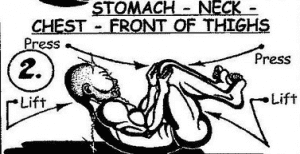
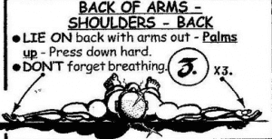
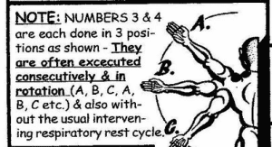
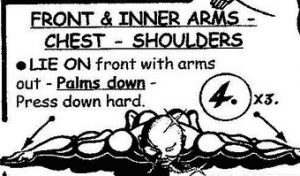
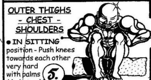
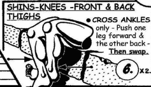
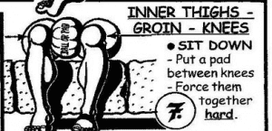
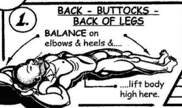

< < < Back
How To Work Out The Lower Half Of Your Body Using Isometric Exercises – Return Of Kings
Last week, I discussed the use of isometric exercises to provide a workout for those in restrictive positions. That article explained some of the theory behind these exercises, as well as their practice for the muscles of the upper body. This article will deal with the exact same subject matter, but for the muscles of the lower body instead (and no, this article will not discuss exercising the pubococcygeus muscles, please see one of my previous articles for a particular set of isometric exercises for working those elusive muscles).
A Review
Before we begin, let us review the basic principles of isometric exercise:
1. All isometrics are static, flexed positions, not dynamic movements
2. A full breath is done before the flexion, the breath is exhaled during the flexion, and the normal breathing resumes as the muscles are relaxed
3. Hold each flexion for 10-15 seconds
4. Do each exercise 2-4 times, depending on your preference.
With that being said, let us now discuss the positions that will work the lower body, as well as other muscles that were not worked by the exercises discussed in last week’s article.
The Exercises
These exercises, and the images of them, are once again taken from the “Black Monk” isometric set.
The first exercise is another one for the abdomen, a pose you’ll sometimes see referred to as the “Scrunch.” Lay down flat on the floor, and lift your legs up, bending at a 90 degree angle with your feet off the ground. Then bend at the abdomen, lifting the torso up until you cannot move forward any further. Then hold this position while holding your breath, exhaling upon relaxing the muscles.

The next exercise works the back, shoulders, and triceps: lay down on the floor, keeping the feet together, the legs straight and extended, and the arms in a “Crucifix” position. Then press down hard with the palms up.

This exercise is done three times, with the arms held in three different positions as pictured

Then do the reverse of this exercise: lay on the stomach with the palms down, and push down with the palms down, remembering to breathe properly. This exercise will work the biceps, chest, and shoulders.

The next set of exercises are ones that actually work the legs:
To begin, sit down with the feet on the floor. Using the hands, attempt to press the legs together as hard as possible, while resisting with the legs. In addition to working the quadriceps muscles, this exercise also works the chest and shoulders.

The next exercise also works the legs, but the calves and hamstrings rather than the quadriceps: While sitting on a chair and dangling the feet down, cross ankles and push one foot forward while pulling the other one back. Do two sets of each direction.

This next exercise works the inner thighs knees and groin: sitting in a similar position to the previous two exercises (sitting on a chair or bed with the feet dangling off them to the floor), put a folded up pillow, towel, or some similar padded object in between the legs. Then attempt to force the legs together. You can use a hard, rigid object (such as a box, or a watermelon), but bear in mind there is a risk of breaking, so use common sense.

And finally, a “total body” isometric exercise that can be done is to lay flat on your back, with the arms crossed bend your head and the feet pointing up. Apply pressure through the elbows and heels, balancing the body on those body parts while lifting the back and buttocks slightly off the floor.

Conclusion
So concludes the hoary “Black Monk” isometric exercises. But these are certainly not the only applications of this style of muscular exercise. Indeed, any resistance exercise can be made into an isometric exercise by holding it in a static position. For example, a lifted weight can be held in a fixed position over head, this giving an isometric exercise to the shoulders and forearms.
Isometric exercise can also be combined with movement of other muscles to increase instability and thus force the muscles to work harder, such as in the overhead farmer’s walk: an exercise consisting of lifting a heavy weight over head (the static component) and walking while keeping the weight overhead (the dynamic component).
While isometrics are no substitute for traditional resistance training, they do have their place for any athlete.
Read More: Are Isometric Exercises Worth Doing?